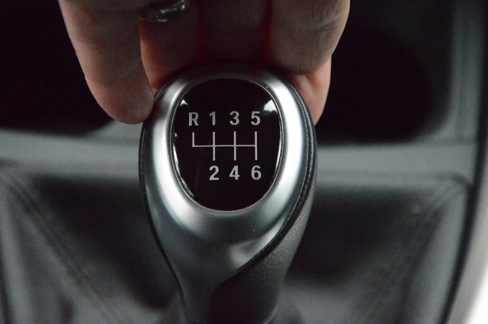
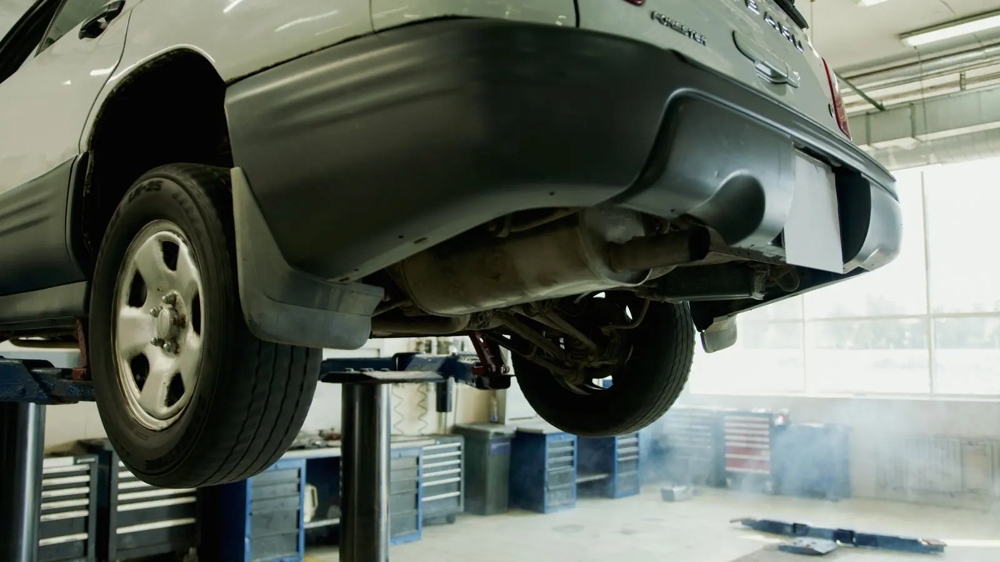

Independent Subaru Specialists
Locally owned and operated since 2000, we're one of the Portland metro area's few Subaru specialists.
- Independent Subaru specialists
- Since 2000
- Locally owned
- Honesty & integrity
Auto repair services

Subaru Maintenance
Scheduled service, done by a Subaru specialist.
Learn more →
Diagnostics
Check engine lights and hard-to-find problems.
Learn more →Timing Belts
Timing belts and water pumps, done on schedule.
Learn more →
Engine Rebuilds & Swaps
Head gaskets, rebuilds and complete engine swaps.
Learn more →
Clutches
Clutch replacements for manual Subarus.
Learn more →
Performance Builds
WRX and STI performance work.
Learn more →What customers say
Dale is by far the mechanic I trust the most. I cannot overstate how knowledgeable, trustworthy and fair he is. I don't trust anyone with my subaru more than him. He is a great guy through and through. I'd give him 6 stars if it was possible!
They rebuilt my engine and did an excellent job. Very good price, speedy, great work, and Dale kept me up to date on progress. This is the place to go if your Subaru needs fixing.
Dale is amazing. His work is amazing. He's great at communicating and his pricing is great as well. Highly recommend!
Dale has done work for our kids Subaru awhile back and was a piece of cake to work with. Honest, knowledgeable and very reasonably priced.
Dale was great. Nice to work with and performed a 60k service on our 2011 Outback. Nothing to fix but he saved me over the dealership and did a thorough check out.
I can't thank you enough for the care you have shown my car and the kindness you've shown me.

Honesty and integrity
We owe our success to staying true to our core belief that the needs of the customer shall always be met. We take great pride in knowing that our customers drive away after every visit knowing they are getting the best service possible.
Our strongest qualities are honesty and integrity. We believe in keeping you informed and providing options to match your budget and goals. We are always ready to answer your questions or concerns.
What's going on with your car?
Tell us what your vehicle is doing and Dale will get back to you. Or call (503) 504-4032 (Mon–Fri: 10am–6pm).
- (503) 504-4032
- 3506 SW 209th Ave, Aloha, OR 97007